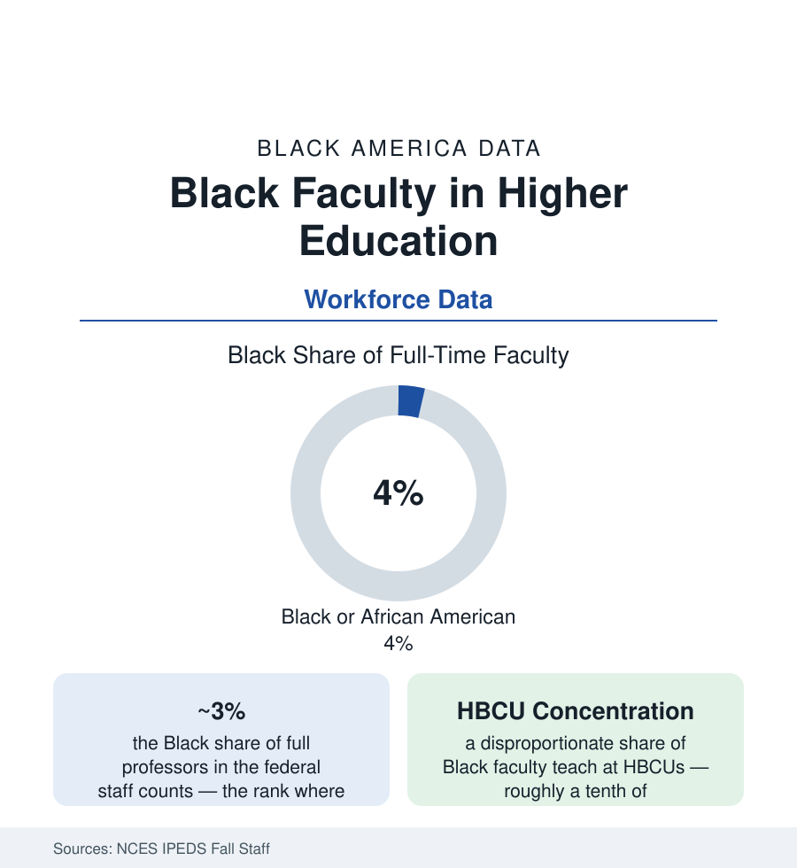

Black Education
Black Faculty: Four Percent of the Professoriate
Black scholars hold about 4% of America's full-time faculty positions and 3% of full professorships — concentrated at HBCUs and in a handful of fields. The IPEDS and survey data.

The students in this section are taught, at the college level, by a professoriate that is about four percent Black: the federal staff surveys count Black scholars at roughly four of every hundred full-time faculty members, about three of every hundred full professors, and a share of tenure-track positions that has moved by fractions of a point per decade in the modern data. The numbers sit beside the student data like a question — Black students are 12% of undergraduates and earn a rising share of doctorates, but the people at the front of the lecture hall change at the pace of a thirty-year career cycle. This article reads the faculty file: where Black professors teach, what they teach, and what the pipeline arithmetic actually permits.
Where Black Faculty Teach: The Institutional Map
The IPEDS geography is concentrated: HBCUs — about three percent of institutions enrolling about nine percent of Black students — employ a greatly outsized share of Black faculty (at many HBCUs, half or more of the faculty is Black), so that a small institutional tier carries a large fraction of the entire Black professoriate. Beyond them, the distribution follows the sectors: community colleges (Black faculty shares nearest the student shares, in the sector with the most Black enrollment), the regional comprehensives, and then the research universities, where the shares fall to the low single digits and the flagship counts become nameable departments at a time. The institutional data carry the retention file with them: the 'revolving door' studies of Black faculty at predominantly white institutions (the climate, service-load, and tenure-outcome literature — the 'minority tax' of mentoring and committee work the surveys quantify), the cluster-hire and spousal-hire mechanics of the current recruitment era, and the salary-equity audits several systems now publish. The map's summary statistic is the one students feel: the probability that a Black undergraduate at a non-HBCU encounters a Black professor in a required course remains, in the enrollment-weighted estimates, a minority experience.
Fields, Ranks, and the Tenure Gradient
The field distribution concentrates Black faculty where the doctorate data predict: education, social sciences, humanities, health professions, and business hold the bulk; engineering, mathematics, and the physical sciences hold shares near or below two percent in the NSF's doctorate-recipient tracking — the faculty file inheriting the degree file's shape a generation later. The rank gradient is the file's slope: assistant professors more diverse than associates, associates more than full professors — partly the cohort effect (recent, more diverse PhD classes aging upward) and partly attrition (the tenure-denial and departure data the AAUP and institutional studies record). Contingency compounds it: the growing adjunct and non-tenure-track tier employs Black instructors at higher rates than the tenure track in the sector data — the profession's precarity distributed along its familiar gradient — while the administrative ladder (department chairs, deans, provosts, presidencies — the leadership file's higher-ed slice) thins to shares the presidential-survey data count in the low single digits outside the HBCU sector.
The Pipeline Arithmetic
The doctorate data set the ceiling the faculty file cannot exceed: Black PhD recipients at roughly five to six percent of U.S. research doctorates in the recent Survey of Earned Doctorates years (higher in education and the social sciences, lower in STEM), from which — after the postdoc years, the academic-job market's own filters (the prestige-network hiring studies showing a small set of doctoral programs supplying a majority of faculty at research universities), and the industry's competing offers — the faculty share is drawn. The interventions with measured effects read like the other pipelines' files: the fellowship and cohort programs (Mellon, Ford, and the disciplinary pipeline consortia), the HBCU-to-PhD bridges, the faculty-diversity postdoc lines, and the retention infrastructure (mentoring networks through the disciplinary associations' Black caucuses, the service-load accounting reforms) aimed at the attrition half of the slope. The demography sets the stakes in the other direction: as the undergraduate population diversifies cohort by cohort, a static faculty share means the representation ratio — Black faculty per Black student — falls even when the headcounts hold.
Reading the Faculty Data
Four percent at the lectern, three percent at the top rank, a tenth of the nation's colleges carrying a third of the load: the faculty data describe a profession whose composition was set by the doctorates of the 1990s and whose next composition is being set, measurably, by the fellowship cohorts and tenure files of today. The professoriate changes at the speed of careers — which is the data's way of saying that every year of pipeline is a generation of classrooms.
More in Black Education
Black Educational Attainment: High School Parity, the College Gap
About 89 percent of Black adults hold a high school diploma and one in four holds a bachelor's degree or higher — the attainment ladder, the college completion gap, and the generational trend.
Historically Black Colleges and Universities: Enrollment and Degrees
More than 100 HBCUs enroll roughly 290,000 students and award about one in six Black bachelor's degrees — an outsized share from a small sector. The federal education data.
Black College Enrollment: 2.4 Million Students
About 2.4 million Black students are enrolled in American colleges — nearly two-thirds of them women. The NCES enrollment data by sector, level, and trend.
Source: National Center for Education Statistics, IPEDS Fall Staff surveys; American Association of University Professors; National Science Foundation Survey of Earned Doctorates; TIAA Institute and higher-education workforce research.